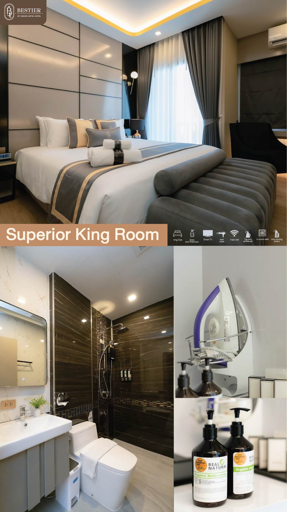
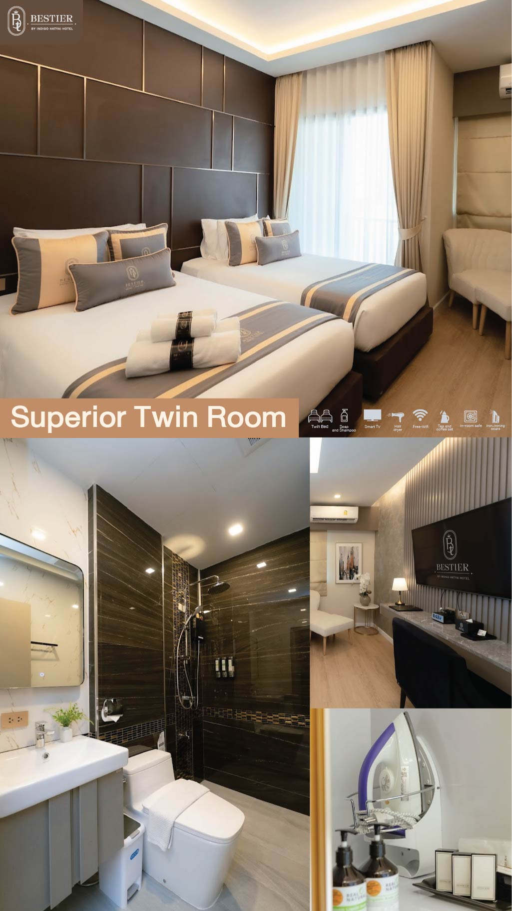
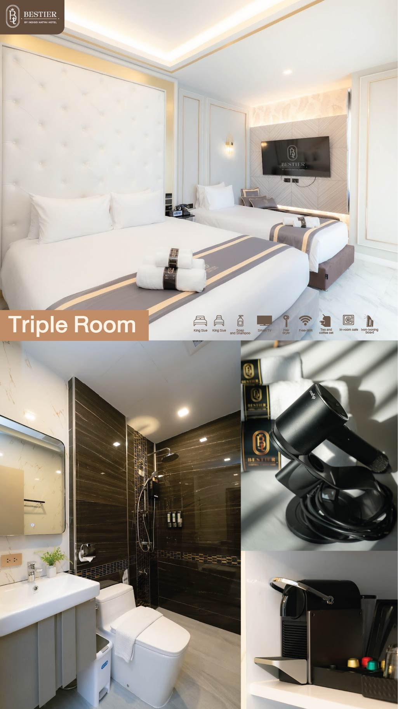
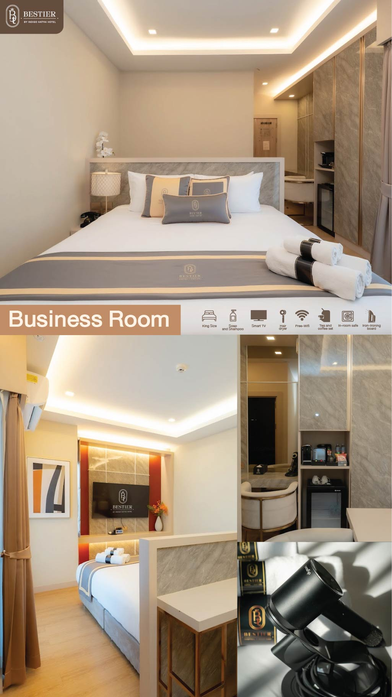
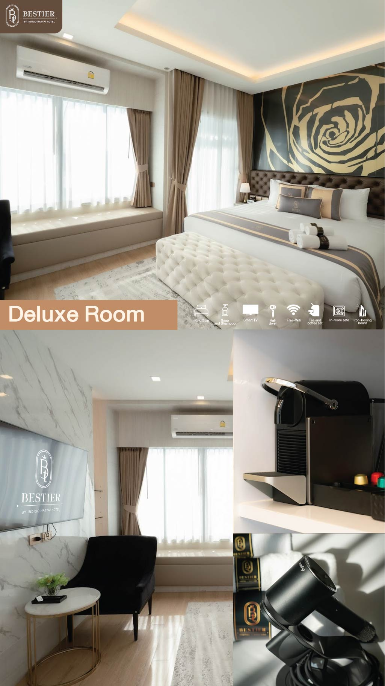

A PRIVATE ADDRESS IN HAT YAI
A quiet
kind of luxury.
ความหรูหราที่สัมผัสได้
ในจังหวะที่เป็นของคุณ
BESTIER↘
A SENSE OF PLACE
พักอย่างมี
ความหมาย
Bเราเชื่อว่าการพักผ่อนที่ดีที่สุด ไม่จำเป็นต้องเอ่ยเสียงดัง
Bestier สร้างพื้นที่ให้คุณได้หยุดพักจากความเร่งรีบ เติมเต็มวันด้วยรายละเอียดที่คิดมาอย่างพอดี และสัมผัสเสน่ห์ของหาดใหญ่ในแบบที่ใกล้ชิดขึ้น
รู้จัก Bestier ↗
A PLACE TO EXHALE
พื้นที่ส่วนตัว
ที่ พอดีกับคุณ
เลือกห้องพักที่เหมาะกับการเดินทาง
ชมภาพจริงของห้องพักทั้ง 5 รูปแบบ

Superior Kingผู้เข้าพัก 2 ท่าน · ฿1,290
Superior Twinผู้เข้าพัก 2 ท่าน · ฿1,290
Tripleผู้เข้าพัก 3 ท่าน · ฿1,590
Businessผู้เข้าพัก 2 ท่าน · ฿1,690
Deluxeผู้เข้าพัก 2 ท่าน · ฿1,890กดลูกศรหรือปัดภาพเพื่อดูรูปแบบห้องพัก · ดูรายละเอียดทั้งหมด
THE SPACE BETWEEN PLANS
Leave room
for nothing.
บางช่วงเวลาที่ดีที่สุด
คือช่วงเวลาที่ไม่ต้องรีบไปไหน
MOMENT↘
CONSIDERED FOR YOU
ทุกสิ่งที่ต้องการ
อยู่ใกล้แค่เอื้อม
บริการและพื้นที่ที่ช่วยให้การพักผ่อนของคุณราบรื่น ตั้งแต่เช้าจนถึงเวลาที่อยากพักใจ
Free Wi-Fi
อินเทอร์เน็ตไร้สายฟรี พร้อมใช้งานทั่วพื้นที่โรงแรม
↗Private Parking
ที่จอดรถส่วนตัวฟรี สะดวกสบายตลอดการเข้าพัก
↗24-Hour Reception
แผนกต้อนรับพร้อมให้บริการตลอด 24 ชั่วโมง
↗Complimentary Tuk-Tuk
รถตุ๊กตุ๊กรับ-ส่งฟรีในรัศมี 1 กิโลเมตร เวลา 09:00–19:00 น.
↗Complimentary Minibar
มินิบาร์ฟรีภายในห้องพัก
↗
GATHER AROUND THE TABLE
รสชาติของ
การได้อยู่ด้วยกัน
มื้ออาหารที่ดีไม่ใช่แค่รสชาติ แต่คือช่วงเวลาที่เกิดขึ้นรอบโต๊ะ Bestier ชวนคุณมาสัมผัสวัตถุดิบท้องถิ่นและแรงบันดาลใจจากภาคใต้
ค้นพบห้องอาหาร ↗04 — DININGROOTED IN HAT YAI
เมืองที่มีชีวิต
ในระยะใกล้
ออกไปสัมผัสสีสันของหาดใหญ่ แล้วกลับมาพักในพื้นที่ที่เป็นของคุณ
116 ซอย 1 นิพัทธ์สงเคราะห์ 4 ตำบลหาดใหญ่ อำเภอหาดใหญ่ จังหวัดสงขลา 90110
เปิดแผนที่ ↗ตำแหน่งที่ตั้งโรงแรม
116 ซอย 1 นิพัทธ์สงเคราะห์ 4
ตำบลหาดใหญ่ อำเภอหาดใหญ่ จังหวัดสงขลา 90110
YOUR NEXT CHAPTER STARTS HERE